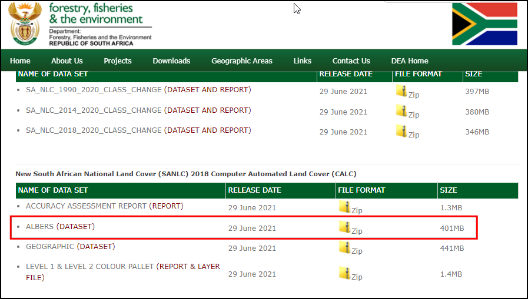
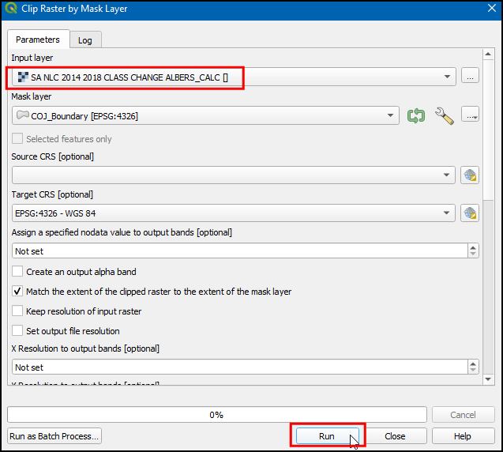
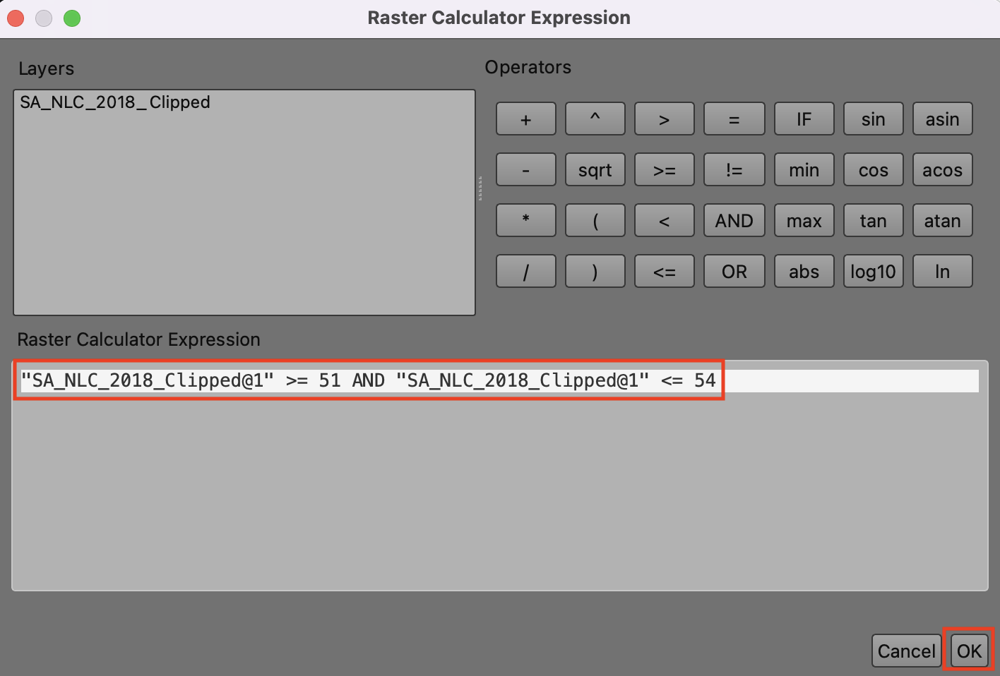
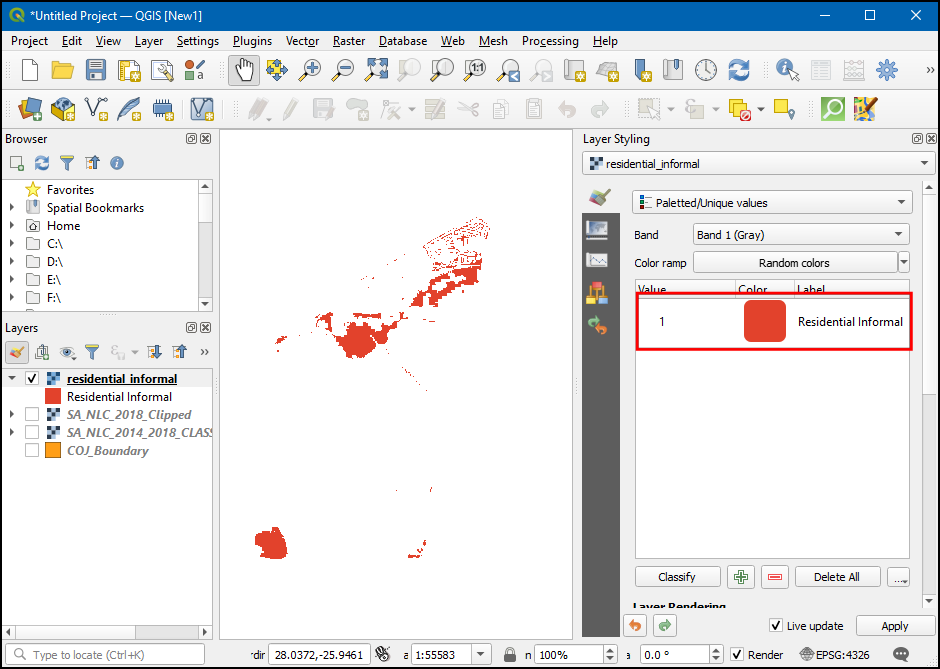
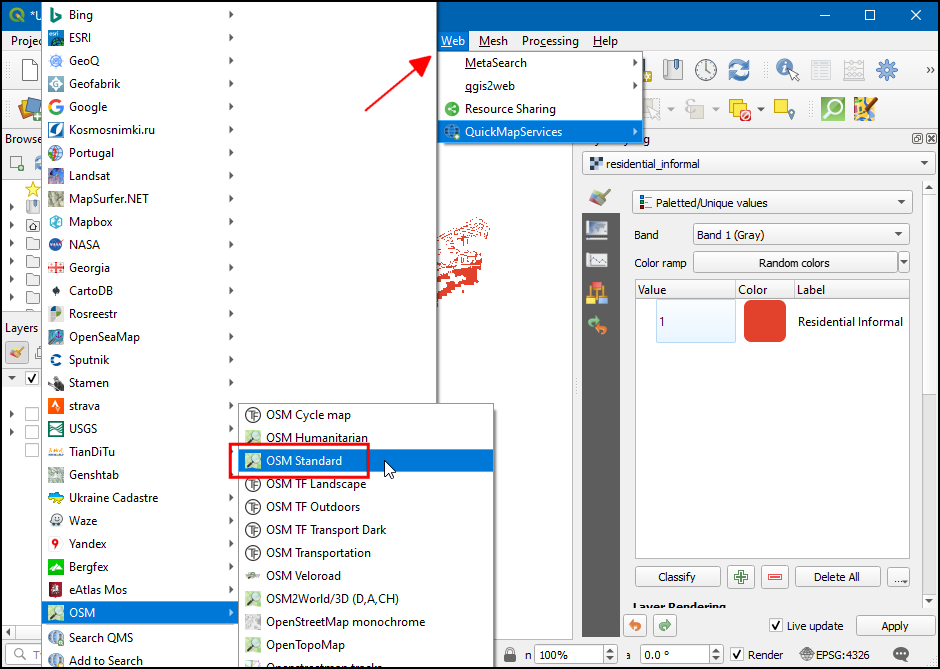
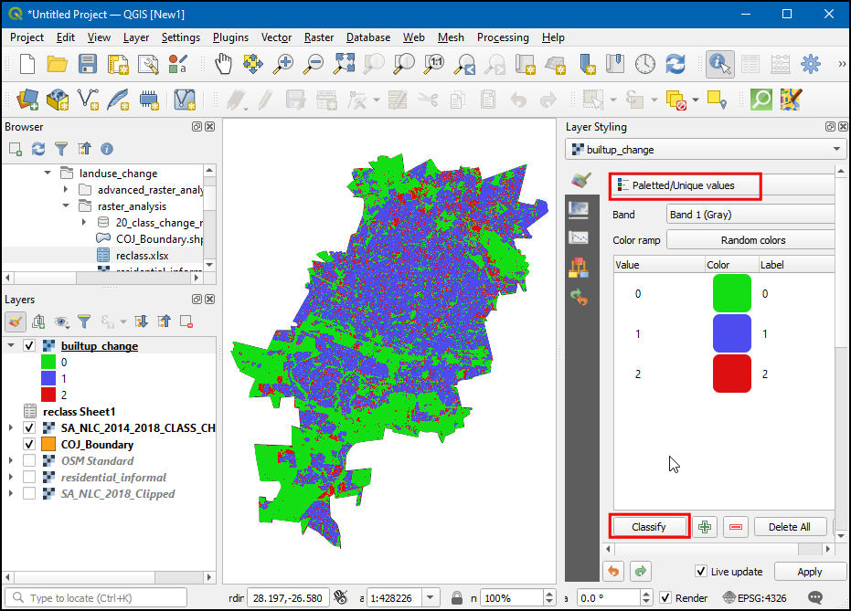
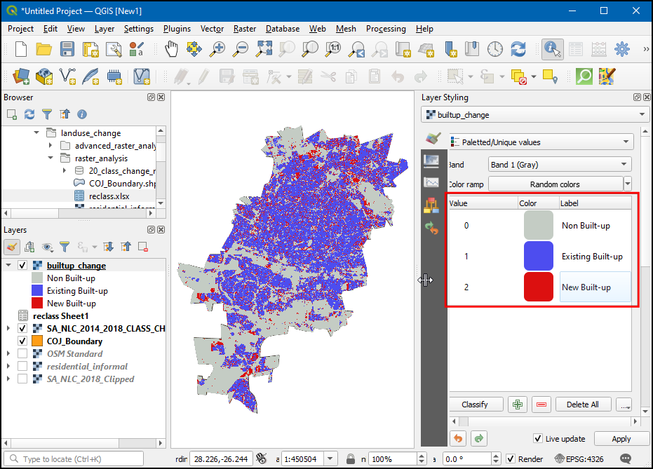

Fortgeschrittene Raster-Analyse (QGIS3)¶
Im vorigen Tutorial Einfache Visualisierung und Analyse von Rasterdaten (QGIS3) haben wir den Umgang mit dem Rasterrechner bei Operationen auf Rasterdaten kennengelernt. Dieses Tutorial baut auf diesen Kenntnissen auf und zeigt, wie die Raster-Analysetools aus den Verarbeitungswerkzeugen verwendet werden. Wir werden lernen, wie Rasterdaten aus Landnutzungskartierungen (engl.: Land Use Land Cover ‒ LULC) in QGIS verarbeitet werden, um verschiedene Klassen der Landbedeckung zu gewinnen und Karten anzupassen.
Überblick über die Aufgabe¶
Wir werden den Datensatz des South African National Land Cover verwenden, um informelle Siedlungen im Stadtgebiet von Johannesburg in Südafrika zu identifizieren und zu extrahieren. Außerdem werden wir einen Datensatz zur Bewertung des Wandels verwenden, um Muster im urbanen Wachstum der Stadt von 2014 bis 2018 zu identifizieren.
Weitere Fähigkeiten, die wir erlernen:¶
die Abbildung von Rasterdaten in einer anderen Projektion
den Import einer Excel-Datei in QGIS
die Anpassung der Transparenz eines Raster-Layers in QGIS
Beschaffung der Daten¶
Wir werden folgende Datensätze zur Verwendung in diesem Tutorial herunterladen:
The South African National Land Cover 2018 dataset: Dieser Datensatz wurde aus den Sentinel-2-Satellitenbildern mehrerer Jahreszeiten mit einer Auflösung von 20 Metern generiert und enthält 73 Klassen der Landbedeckung.
The South African National Land Cover 2018 Change Assessments: Dieser Datensatz vergleicht die Änderungen in 20 Klassen der Landbedeckung von 2014 bis 2018.
COJ Boundary: ein Shapefile für die Grenzen der Stadt Johannesburg in Südafrika
Das Environmental Geographical Information Systems (E-GIS) bietet Zugang zu umweltbezogenen Geodaten für Südafrika. Wir werden die Rasterdaten des South African National Land-Cover (SANLC) aus diesem Portal herunterladen.
Dazu rufen wir die Website GIS Data Download auf und klicken auf I agree, um die Nutzungsbedingungen zu akzeptieren und fortzufahren.

Um die Daten herunterladen zu können, ist es erforderlich, ein kostenloses Nutzerkonto anzulegen. Wir klicken auf I want to create an account und folgen den Anweisungen zur Anlage eines Nutzerkontos.

Nach dem Login suchen wir nach South African National Land Cover (SANLC) 2018 Computer Automated Land Cover (CALC). Dieser Datensatz wird mit zwei unterschiedlichen Projektionen ausgeliefert. Für dieses Tutorial laden wir den ALBERS-Datensatz herunter und klicken auf den Link zum Download der Datei SA_NLC_2018_Albers_CALC_data.zip.

Danach suchen wir nach New South African National Land Cover (SANLC) 2014 and 2018 Change Assessment Datasets Computer Automated Land Cover (CALC) und klicken auf SA_NLC_2014_2018_CLASS_CHANGE_CALC (DATASET AND REPORT), um die Datei SA_NLC_2014_2018_CLASS_CHANGE_ALBERS_CALC.tif.vat.zip herunterzuladen.

Die City of Johannesburg veröffentlicht räumlich zuordenbare Datensätze als Teil des Spatial Development Framework 2040 (SDF) for Johannesburg. Wir werden das Shapefile mit den Grenzen der Stadt von dieser Website herunterladen.
Dazu klicken wir auf den Download-Link http://bit.ly/joburg-sdf-16.
Wir wählen das Verzeichnis
SDF Shapefiles.

Wir laden die Datei SDF Shapefiles.zip` herunter und entpacken sie in ein Verzeichnis unserer Wahl.

Der Einfachheit halber sind die zugeschnittenen Versionen der erforderlichen Layer unter den folgenden Links verfügbar:
Arbeitsablauf¶
Wir suchen nach dem heruntergeladenen und extrahierten Ordner im Browser, öffnen ihn und ziehen
SA_NLC_2018_ALBERS_CALC.tifin den Arbeitsbereich.

Sobald der Layer geladen wurde, kann man feststellen, dass das KBS als Unbekanntes KBS in der Statusleiste unten rechts deklariert wurde. Wir führen darauf einen Doppelklick aus, um das Dialog-Fenster Projekteeigenschaften - KBS zu öffnen.

Im unteren Teil wird eine Vorschau auf die Ausdehnung der Projektion angezeigt. Dieses Unbekannte KBS verwendet eine benutzerdefinierte Methode Albers Equal Area für Südafrika. Wir werden den Layer später reprojizieren und klicken zunächst auf OK.

Wir laden die anderen beiden Layer
SA_NLC_2014_2018_CLASS_CHANGE_ALBERS_CALC.tifundCOJ_Boundary. Die Raster-Layer überdecken das gesamte Land. Für unsere Analyse interessiert jedoch nur die Fläche, die vom LayerCOJ_Boundaryabgedeckt wird. Daher werden wir die Raster-Layer auf diese Region zuschneiden und wählen und darin . Wir öffnen das Werkzeug mit einem Doppelklick.

Im Dialog Raster auf Layermaske zuschneiden, wählen wir
SA_NLC_2018_ALBERS_CALCals Eingabelayer, danachCOJ_Boundaryals Maskenlayer. Wir haben hier auch die Möglichkeit, die Daten zu reprojizieren. Es zeugt von guter Praxis, alle Daten-Layer in derselben Projektion vorzuhalten. Wir werden die Raster so reprojizieren, dass sie der Projektion desCOJ_Boundary-Layers entsprechen. Dazu wählen wirEPSG:4326 - WGS 84als Ziel KBS.

Das voreingestellte Ausgabeformat ist GeoTiff. Dateien dieses Typs können sehr groß sein, wenn sie nicht komprimiert werden. Es zeugt von guter Praxis, immer eine verlustfreie Kompressionsmethode zu wählen, wenn neue Raster-Layer erstellt werden. Wir erweitern den Bereich Fortgeschrittene Parameter und wählen
Hohe Kompressionals Profil. Als nächstes benutzen wir den Button … neben dem Eingabefeld von Abgeschnitten (Maske) und wählen In Datei speichern…, um als Namen des LayersSA_NLC_2018_Clippedanzugeben. Wir klicken auf Starte.

Wir schließen das Fenster nicht, wenn der Algorithmus beendet wurde. Stattdessen werden wir dieselbe Operation auf den anderen Raster-Layer anwenden. Dazu wechseln wir in den Bereich Parameter und ändern den Eingabelayer auf
SA_NLC_2014_2018_CLASS_CHANGE_ALBERS_CALC. Alle anderen Optionen belassen wir, nur der Name des Ausgabelayers wird aufSA_NLC_2014_2018_CLASS_CHANGE_Clippedgeändert. Wir klicken erneut auf Starte.

Die zugeschnittenen Layer werden in den Arbeitsbereich geladen. Wir wählen die Original-Layer und im Kontextmenü Layer löschen…, um sie zu entfernen.

Die drei verbliebenen Layer werden in dasselbe KBS projiziert. Wir können nun das Projekt-KBS auf das der Layer setzen. Wir klicken dazu mit der rechten Maustaste auf einen der Layer und wählen .

Das KBS
EPSG:4326wird nun dem Projekt zugewiesen. Wir ziehen den Layer SA_NLC_2018_Clipped ganz nach oben.

Wir wählen den Layer SA_NLC_2018_Clipped aus und benutzen das Werkzeug Objekte abfragen aus der Attributwerkzeugleiste, um über einen Klick auf das Bild die Werte des entsprechenden Pixels prüfen zu können. Es ist ersichtlich, dass die Pixel Werte zwischen 1 und 73 besitzen. Diese Werte repräsentieren jeweils eine Klasse der Landnutzung/Landbedeckung.

Die Klassen in diesem Datensatz sind in
SANLC 2018 Presentationbeschrieben, was über das EGIS Portal abgerufen werden kann. Für diese Übung interessieren wir uns für die informellen Siedlungen, welche durch die Klassen 51 bis 54 repräsentiert sind.

Wir werden nun die Pixel extrahieren, welche zu diesen Klassen gehören. Wir wählen in den Verarbeitungswerkzeugen das Werkzeug Rasteranalyse –> Rasterrechner und öffnen es per Doppelklick.

Die Bildquelle umfasst lediglich 1 Spektralband. Das Suffix
@1bezieht sich auf die Nummer des Spektralbandes. Wir geben den folgenden Ausdruck ein, um die Pixel der Klassen 51-54 zu extrahieren.
"SA_NLC_2018_Clipped@1" >= 51 AND "SA_NLC_2018_Clipped@1" <= 54
Wir scrollen soweit herunter, dass wir den Button
...neben dem Eingabefeld Referenzlayer wählen können. Im Dialog wählen wir den LayerSA_NLC_2018_Clippedund klicken OK.

Wir klicken auf den Button … neben Berechnet und wählen In Datei speichern….

Die Ausgabedatei nennen wir
residential_informal.tifund klicken Starte.

Nach Abschluss der Verarbeitung wird ein neuer Layer
residential_informalhinzugefügt. Die Pixel dieses Raster-Layers haben nur zwei Werte:1für die auf den eingegebenen Ausdruck bezogen mit wahr gekennzeichneten Pixel und0für die Pixel, in denen der Ausdruck mit falsch ausgewertet wurde. Die weiß erscheinenden Pixel gehören zu den Klassen der informellen Siedlungen. Wir werden die Darstellung dieses Layers so verändern, dass wir die informellen Siedlungen klar erkennen können. Dazu klicken wir auf den Button Layergestaltungsfenster öffnen.

Wir wählen
residential_informalals zu bearbeitenden Layer und ändern die Darstellung auf Paletten-/Eindeutige Werte. Wir klicken auf den Button Werte manuell hinzufügen (+).

Wir ändern den Wert auf
1und gebenInformelle Siedlungals Beschriftung ein. Die Farbe können wir beliebig wählen.

Nun sind alle informellen Siedlungen von Johannesburg dargestellt. Es wäre hilfreich, sie im Zusammenhang mit einer Basiskarte darzustellen. Mithilfe der Erweiterung QuickMapServices haben wir Zugriff auf eine Vielzahl von Basiskarten. Nach der Installation der Erweiterung wählen wir , um den OpenStreetMap-Layer hinzuzufügen.

Nun können wir leicht ermitteln, ob unsere Analyse die informellen Siedlungen korrekt ermittelt hat. Wir wählen den Layer
residential_informalund wechseln im Layergestaltungsfenster zum Bereich Transparenz. Wir können die Globale Deckkraft reduzieren, sodass sowhl die extrahierten Pixel als auch die Basis-Karte zu sehen sind.

Der erste Teil des Tutorials ist nun bearbeitet. Im Folgenden werden wir den Raster-Layer
SA_NLC_2014_2018_CHANGE_Clippedbenutzen, um die Regionen zu identifizieren, die zwischen 2014 und 2018 urbanisiert wurden. Wir schalten die Sichtbarkeit aller Layer außerSA_NLC_2014_2018_CHANGE_Clippedaus und klicken dann auf den Button Layergestaltungsfenster öffnen. Wir wechseln in den Bereich Transparenz und geben0bei Zusätzlicher Leerwert ein. Das wird alle Pixel mit dem Wert 0 transparent schalten.

Wir verwenden das Werkzeug Objekte abfragen in der Attributwerkzeugleiste, um an verschiedenen Stellen auf das Bild zu klicken und die Pixelwerte zu erkunden. Die Werte variieren zwischen 21 und 420. Jeder Wert repräsentiert die Veränderung von einer der ursprünglichen 73 Klassen zu einer anderen.

Die aus der Originalquelle heruntergeladenen Daten enthalten eine Datei
lcccodes.xlsx. Diese Datei enthält ein Datenblatt 03 urban_change_codes, das mehr Details zu jedem Pixelwert enthält. Wir interessieren uns für alle Pixelwerte, in denen irgendeine 2014 ermittelte Klasse sich 2018 in eine Klasse mit Bebauung gewandelt hat. Im unten gezeigten Bild sind diese Pixel blau hervorgehoben.

Unser Ziel ist die Darstellung der Änderungen in der Klasse für Bebauung. Wir werden eine Transformation auf den Layer
SA_NLC_2014_2018_CHANGE_Clippedanwenden, sodass alle Pixelwerte dargestellt werden, die von ihren Originalwerten in einen der folgenden Werte geändert wurden.
|
Alle Pixel, die sowohl 2014 als auch 2018 eine Klasse der Bebauung darstellten |
|
Alle Pixel, in denen sich die Klasse von unbebaut in in 2014 zu bebaut in 2018 geändert hat |
|
Alle übrigen Pixel |
Um dies zu erreichen, müssen wir eine Tabelle erstellen, welche diese Regeln abbildet. Da QGIS Tabellenkalkulationsdateien direkt verarbeiten kann, besteht die günstigste Methode darin, sie direkt zu erstellen. Unsere Tabelle soll 3 Spalten enthalten,
MIN,MAXundOUTPUT. Jede Zeile soll den Wertebereich der Eingabedaten enthalten, der auf einen Ausgabewert abgebildet wird. Wir erzeugen die Tabelle wie unten dargestellt und speichern sie alsreclass.xlsxim Dateiverzeichnis. Eine sofort nutzbare Tabelle kann auch über den folgenden Link heruntergeladen werden - reclass.xlsx

Wir suchen die Datei
reclass.xlsxim Browser und fügen sie per Drag & Drop in den Arbeitsbereich ein.

Im Layer-Bereich wird ein neuer Layer
Sheet1hinzugefügt. Per Rechtsklick öffnen wir das Kontextmenü und wählen Attributtabelle öffnen. Wir prüfen, ob die Tabelle korrekt importiert wurde und die 3 SpaltenMIN,MAXundOUTPUTenthält. Wir öffnen das Werkzeug .
Im Dialog Nach Layer neuklassifizieren wählen wir
SA_NLC_2014_2018_CHANGE_Clippedals Rasterlayer. Wir wählenSheet1als Layer mit Klassengrenzen und die FelderMIN,MAXundOUTPUTfür die entsprechenden Wertemit minimalem Klassenwert,mit maximalem Klassenwertund alsAusgabewertfeld.

Wir erweitern den Bereich Fortgeschrittene Parameter und ändern die Bereichsgrenzen in
min <= Wert <= max. Mithilfe des Buttons … neben Neuklassifiziertes Raster geben wir als Namen für die Ausgabedateibuiltup_change.tifein. Wir klicken auf Starte.

Nach Abschluss der Verarbeitung wird ein neuer Layer
builtup_changemit Pixelwerten0-2zum Arbeitsbereich hinzugefügt. Im Layergestaltungsfenster wählen wirPaletten-/Eindeutige Werteund klicken dann auf Klassifizieren.

Für jede Kategorie kann eine beliebige Farbe gewählt werden. Außerdem sollten wir die Beschriftungen für die Werte
0,1und2aufUnbebaut,Vorhandene BebauungundNeue Bebauungändern.

Schließlich verringern wir im Bereich Transparenz die Globale Deckkraft und schalten die Sichtbarkeit des Layers
OSM Standardan, um sowohl die Pixel mit den Änderungen in der Bebauung als auch die Basis-Karte sehen zu können.

If you want to give feedback or share your experience with this tutorial, please comment below. (requires GitHub account)